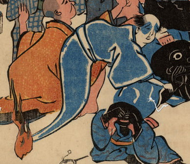

男の幽霊。白装束で足が無く、先には火の玉がついている。鯰にしがみついている。
出典：親書誌：U426_nichibunken_0200：〔鯰へのこらしめ；ナマズヘノコラシメ〕／日付：2010／資源識別子：U426_nichibunken_0200_0003_0000
Copyright (c)2010- International Research Center for Japanese Studies, Kyoto, Japan. All rights reserved.